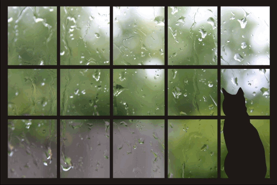

<body>

</body>

<script type="text/javascript">
var audioContext = new webkitAudioContext();
var bufferSize = 4096;
var whiteNoise = audioContext.createScriptProcessor(bufferSize, 1, 1);
whiteNoise.onaudioprocess = function(e) {
    var output = e.outputBuffer.getChannelData(0);
    for (var i = 0; i < bufferSize; i++) {
        output[i] = Math.random() * 2 - 1;
    }
}

whiteNoise.connect(audioContext.destination);
</script>